Life On The Homestead
You - yes, you! - can learn the skills you need to be more self-sufficient. Here’s how one modern homesteader discovered the joys of a self-reliant life.
By Jenna Woginrich
April/May 2009
Late one night I was grinding coffee and listening to a radio show. There was nothing particularly interesting about this. Most nights I get the percolator ready for the next morning, and the radio is almost always on in the kitchen. But that night I realized something mildly profound: A hundred tiny efforts and decisions had converged right there on the countertop.
The radio was crank-powered, and the coffee grinder was an old hand-turner I had picked up at an antique store. I was standing in the glow of my solar-powered lamp with the aid of some beeswax candles. Suddenly, I realized that nothing I was doing required any outside electricity. I was seeing in the dark, grinding locally roasted beans and listening to renewable energy driven entertainment . As mundane as the situation was, it felt perfect.
Outside the kitchen, my trio of hens was cooing in their hutch, and snap pea pods, hanging heavy on the vine, were climbing up my windowsill. The dogs sighed and stretched on the kitchen floor and the smell of just-crushed coffee beans wafted through the air, giving me a sense of profound comfort. I felt that if the world shut down, we’d just go on grinding and stretching and sighing until we retired to a warm bed. Maybe it was the candlelight, or maybe it was the promise of fresh-brewed coffee in the morning, but in that moment I felt I’d accomplished more than anything I had ever achieved in my professional career.
Seeking Sustainability
My first step down the path to self-sufficiency happened when I started learning more about how products get to us consumers. I was considering a vegetarian diet to get in better shape and feel healthier. By reading a few basic books on vegetarianism, I started to learn about the mass production of meat in factory farms and all its related problems. The more I educated myself about how the meals I was eating got to my plate, the more disgusted and disappointed I became. I also became much more appreciative of small farms. The more I read about all the small organic farmers who treated their meat animals humanely and didn’t flood their planting fields with chemicals and pesticides, the less I could stomach buying those foam trays of meat and plastic bags of vegetables from the grocery store.
When you start to comprehend something as basic as how food gets to your plate, you start thinking about how other items find their way to you, too - things such as clothing, electronics and especially energy. The bloodshed and national security threats caused by depending on foreign oil were loud and clear on the daily news. The scary thing was that I was completely dependent on fossil fuels, and so was everyone I knew. My gas-heated apartment, my groceries from the supermarket, my station wagon parked outside - everything was part of the system. And if the system broke, I was going to be hungry, cold and immobile. So I threw my hands in the air. I was done with Wal-Mart and Wonder bread. I wanted something real. I wanted a lifestyle that was no longer a part of the problem, or at the very least was constantly striving to be less involved in it. I wanted a more sustainable life.
Learning about homesteading - or the skills associated with it, anyhow - seemed like the solution I desperately craved. I decided to take the reins and start learning how to produce some of the food and resources I used every day. There were obvious problems: I had no idea what I was doing. I had just spent four years in design school learning where to put things on computer screens, and that doesn’t exactly help you bed down a chicken coop. Also, I didn’t have a home to stead. At that time, I lived in a rented farmhouse in Idaho. The only skills I loosely possessed were simple knitting and soap making, which I did for fun, not as part of some self-reliant lifestyle. So I started doing simple research. I pored over books and magazines. I haunted homesteader blogs and online forums. I did whatever I could to edge my way through the crack in the door.
Homesteading Friends
Finding a mentor who could teach me in person made all the difference. My first visit to a co-worker’s farm one Saturday in February of 2007 turned an evening of conversation into an amazing friendship and a year of learning a more self-reliant way of life.
It’s ironic that I didn’t meet Diana Carlin at the farmers market, or even in the produce section of the grocery store, but at a giant corporation. Her cubicle was a few feet from my own at work. A few weeks after we met, she invited me over to take a tour of her family’s homestead (about 20 minutes from the office), meet the animals, and get a personal introduction to raising chickens. Diana’s house was exactly what I imagined a real homestead would look like: a long, cedar-sided house with a chimney that puffed a wispy trail of wood smoke. It was surrounded by meandering homemade fences and was tucked into a spread of hills. A few pairs of cattle plodded around the front yard, grazing on the lawn (I wondered if the Carlins ever had to mow). We spent the daylight hours meeting cows and collecting eggs from her hundreds of hens. After we tended to the animals, washed up and ate a good meal with her family, we retired to the couches to talk shop.
Maybe it was just my full stomach, but I felt really comfortable. I sat back against a cowhide, which I was told once belonged to Ronald, one of their first farm-bred steers. If my vegetarian friends knew I was in a farmhouse snuggled up next to a blanket with a name, I think they’d be disgusted. But I’m a practical sort of vegetarian. I became one because of the way meat got to the table the disregard for animal welfare and the assembly line style of death were too much for me to get any enjoyment from a fast-food hamburger. But here at Floating Leaf Farm, everything was done the way it had been before industrialization. I respected that. I leaned back into Ronald (who was very warm, by the way - who knew cows were so woolly?) and accepted a glass of homemade wine.
Turns out Diana’s husband, Bruce, unconditionally loves three things besides his wife: Italy, wine and Italy. He’s always been a connoisseur, and as a couple they’ve traveled all over the world visiting vineyards. Bruce’s love of good wine inspired him to make and bottle his own at home. Over the next few months, I heard stories about everything from Italian vineyards to garage bottling operations in the backwoods, all told with equal excitement and devotion. While we were chatting and sipping Syrah, I brought up the topic of honeybees, mentioning that I’d always wanted a hive.
Diana had a few hives, and what started as innocent small talk snowballed into a full-blown crash course in beekeeping. Diana talked excitedly about queens, drones, workers and nectar flow. I hugged my elbows and nodded, my eyes wide. If it was cold out, I didn’t mind. Thanks to the Carlin family and a few glasses of wine, I was plenty warm - and so inspired. With the animals, the farmhouse, and the happy family, Diana had accomplished everything I’d dreamed of. She was proof positive that a modern homesteader could have it all.
Getting Started
Through the long winter and into spring, Diana helped me get started with my livestock efforts. With her help, I got a small flock of chickens, two long-haired Angora rabbits, and a hive of Italian honeybees to buzz through the garden. On summer nights at her place, there would be campfires with music and friends. On calmer nights, I’d relax in a hammock on the back porch and watch what she called “Farm TV.” It was more engrossing than a Ken Burns documentary and more entertaining than a good sitcom. I’d sway back and forth, watching the calves chase after roosters and the ducks waddle about the creek. Angus and Bella, their two dogs, loped along the back pasture. I was mesmerized. Every so often Diana would come out to check on me and look at the episode I was watching, and she’d say, “Oh, I’ve seen this one already. Damn reruns.” I’d laugh, and she’d pour more red wine into my glass.
Life rolled. On Diana’s homestead I learned everything from pounding fence posts to making and canning tomato sauce. It was the best type of mentorship a person could have. Even though we started off as strangers, I felt like I had become a part of their family. And so, my adventures began. Although I started learning about homesteading in Idaho, I’ve since moved to Vermont, where I’m renting another house. My homesteading skills have continued to grow. Yes, I still work a day job. But these days I also stay busy with my garden, chickens, rabbits, dogs and sheep!
The same mess of hope and fear lies at the beginning of any adventure, but just deciding to take part in the things that keep you alive might be the most hopeful and fearsome part of it all. It’s rewarding in its simplicity - the garden, the eggs, the music and friends, the new people and conversations on porches along the way. It’s perfect, all of it, if you just let it be. If you can sit back and just take in the experiences, paying attention to every one along the way, I promise you’ll always come back to them. You’ll lie awake at night thinking about the joys of holding your first baby chicks in your palm and the bliss of serving a salad from your own garden. There is something in these actions that fills you up.
I still dream that someday I can support myself without an office job, and maybe someday I will. Until then, I’ll keep producing my own food, tending my small livestock and canning my own sauce, simply because it makes me feel more in control of my day-to-day life in a way the cubicle never could. I’ve come to understand that what I do in my professional life is not as crucial as I had thought. When I realized that the heavy stuff, the real stuff, was back home on the farm and not at my desk, everything changed. Suddenly the most serious “disaster” at work was nothing. Other employees would act like a deadline was a hurricane, but when you’d spent the morning deciding whether a rabbit with a broken spine should be put down, you couldn’t really stress over PowerPoint presentations. Ironically, it was starting my own homestead that made me happier at work. Go figure.
I think the real trick to finding that sense of satisfaction is to realize you don’t need much to attain it. A window-box salad garden and a mandolin hanging on the back of the door can be all the freedom you need. If it isn’t everything you want for the future, let it be enough for tonight. Living the way you want has nothing to do with how much land you have or how much you can afford to spend on a new house. It has to do with the way you choose to live every day and how content you are with what you have.
If a few things on your plate every season came from the work of your own hands, you are creating food for your body, and that is enough. If your landlord can be sweet-talked into some small backyard projects, go for it with gusto. If you rode your bike to work, trained your dog to pack, or just baked a loaf of bread, let it be enough. Accepting where you are today - and working toward what’s ahead - is the best you can do. Maybe your gardens and coops will outgrow mine, and before you know it you’ll be trading in your Audi for a pickup. But the starting point is to take control of what you can and smile with how things are. Find your own happiness and dance with it.
This article was adapted from Jenna Woginrich’s new book, Made from Scratch (2008, Storey Publishing). Jenna is a Web designer who blogs for Mother Earth News, The Huffington Post, and her personal blog, Cold Antler Farm. Ready to learn skills for self-sufficient living? Check out Homesteading Schools.
|
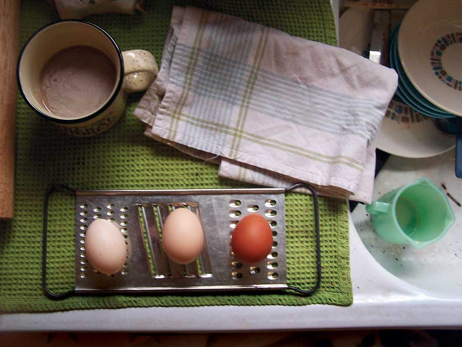 JENNA WOGINRICH A good place to start thinking about self-reliant living is in your own kitchen. Where does the food you eat come from, and could you produce more of it right in your own backyard? |
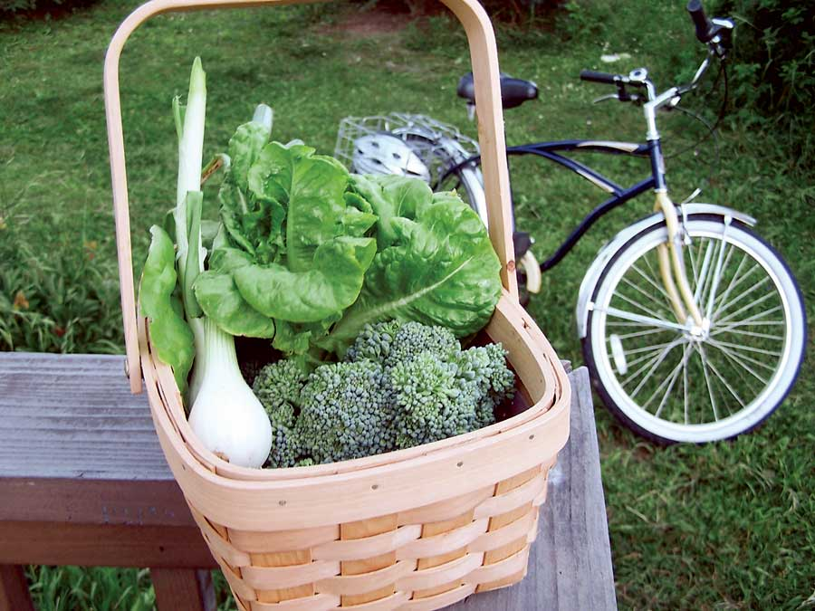 JENNA WOGINRICH Backyard sustainability: local produce and a bicycle. |
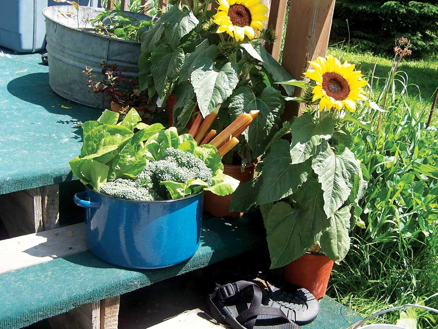 JENNA WOGINRICH Not enough room for a garden? How about containers on your steps? |
|
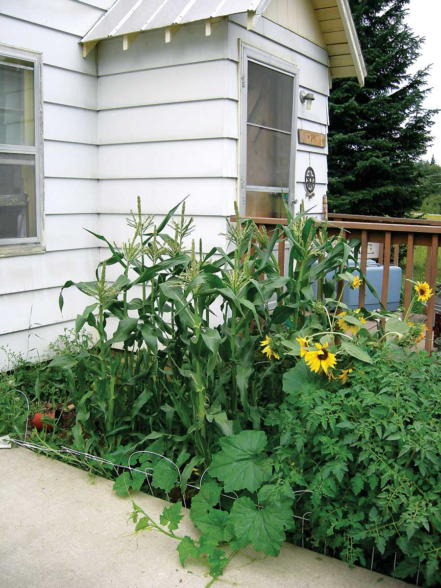 JENNA WOGINRICH You can fit a lot of plants into even a small yard. |
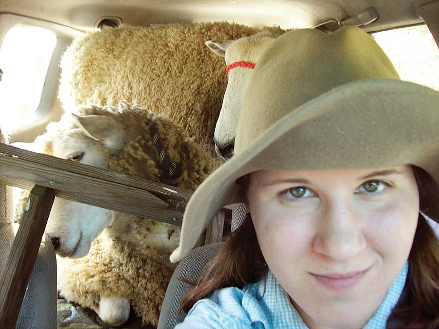 JENNA WOGINRICH How do you know when you’re homesteading? When you have sheep in your car you know you’re off to a good start. |
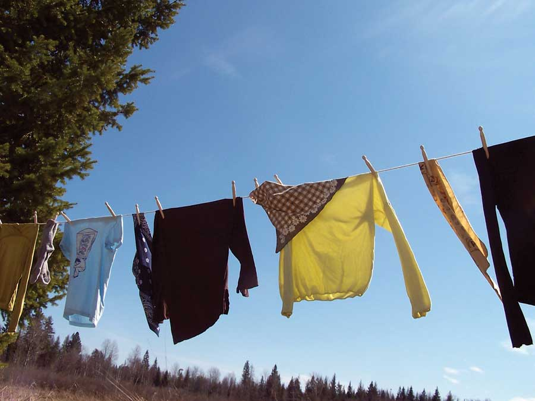 JENNA WOGINRICH Jenna’s new book, “Made from Scratch: Discovering the Pleasures of a Handmade Life.” |
|
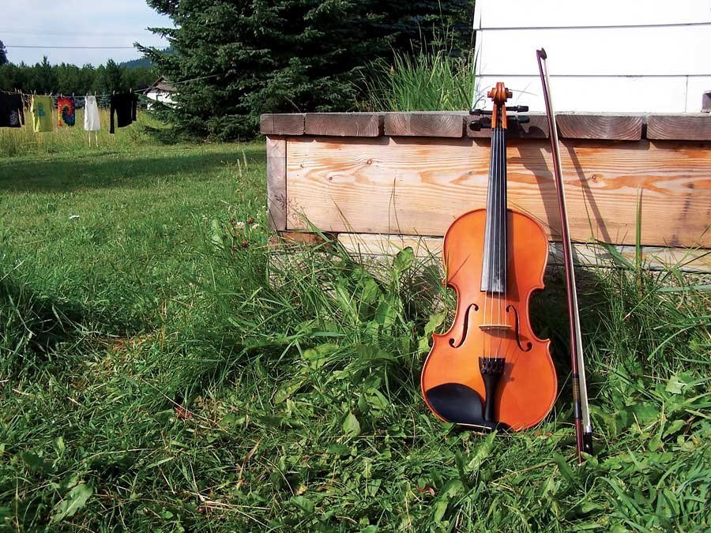 JENNA WOGINRICH Jenna’s fiddle. While you’re learning to be more self-reliant, why not learn an instrument and enjoy homemade music? |
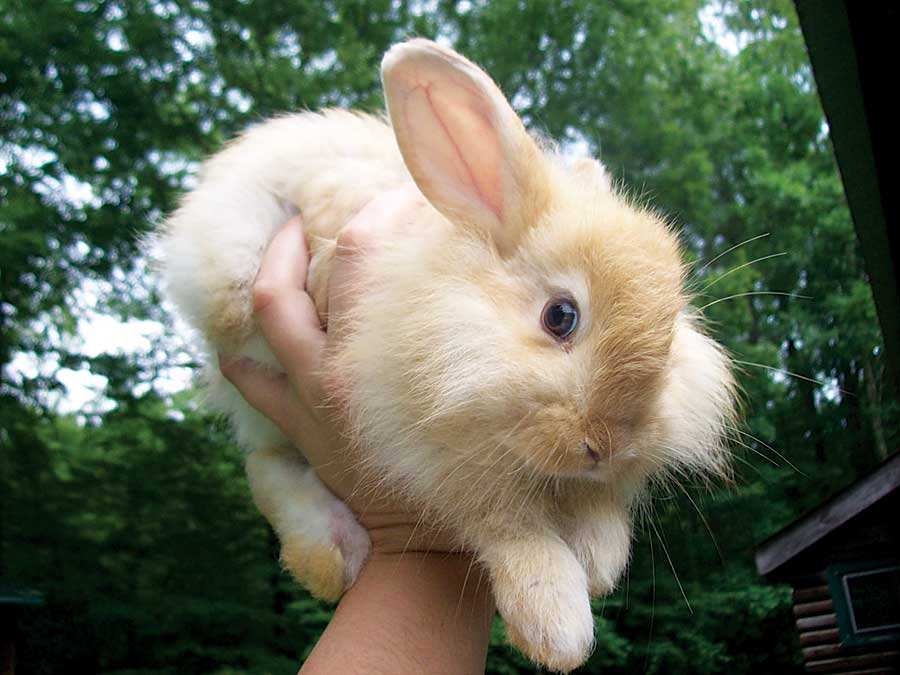 JENNA WOGINRICH Rabbits are a good animal to raise if you have limited space. |
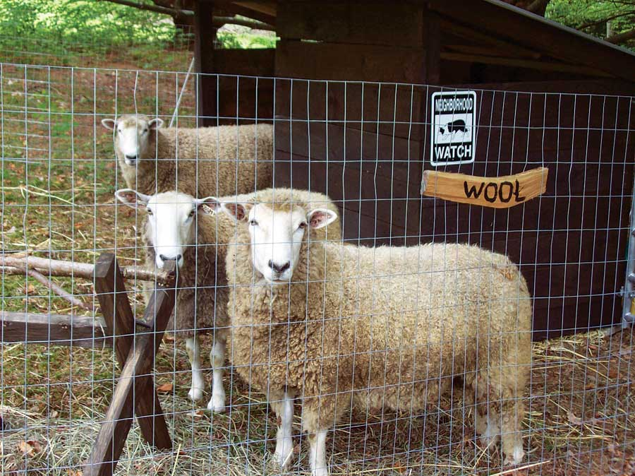 JENNA WOGINRICH You don’t need to own a home to start raising animals. All you need is a backyard and an understanding landlord. |
|
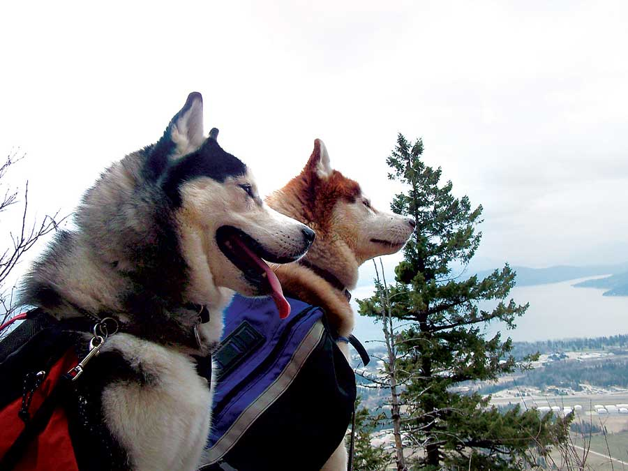 JENNA WOGINRICH Jenna’s house dogs at work carrying dogpacks. |
 JENNA WOGINRICH Chickens on the back porch. |
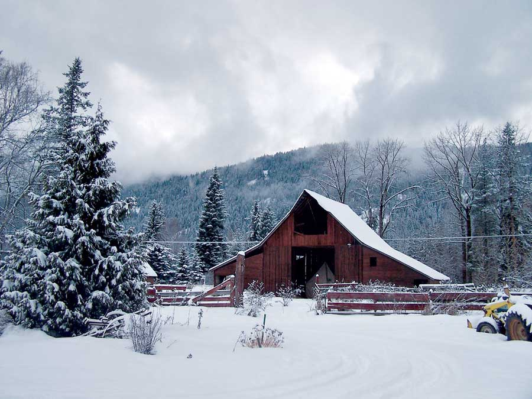 JENNA WOGINRICH Owning your own farmstead may not be practical now, but it’s a wonderful dream for the future. |
|
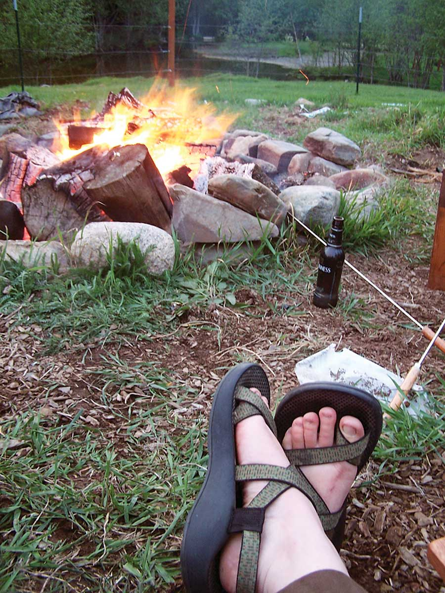 JENNA WOGINRICH Taking some time to relax by the fire. Now this is homesteading! |
JENNA WOGINRICH Beautiful Idaho. |
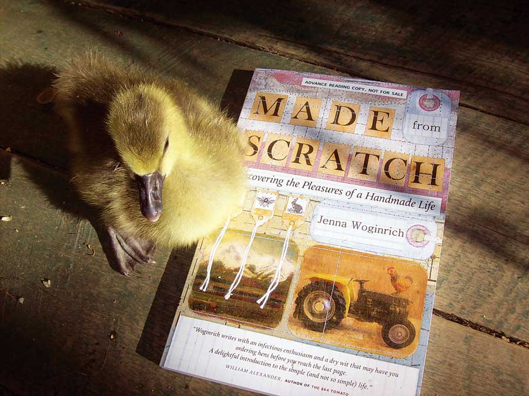 JENNA WOGINRICH |